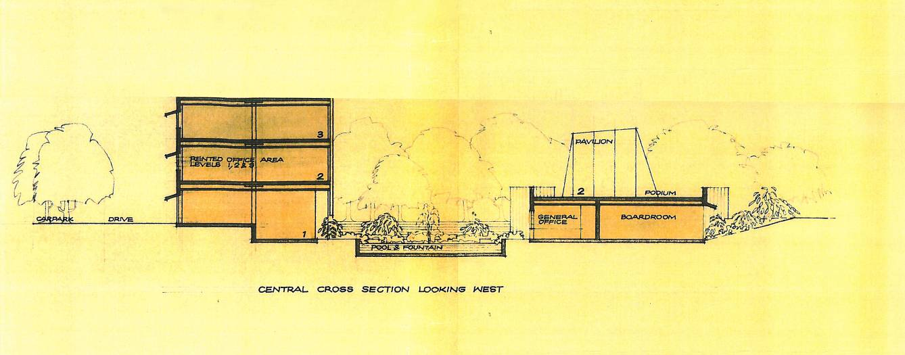

In 2019, the Robin Boyd Foundation is celebrating the 100th anniversary of the birth of one of Australia’s most influential architects Robin Boyd (1919-1971).
The Foundation is holding a year-long series of events under the umbrella program Robin Boyd: Centenary of Design with program partners around Australia. Events, exhibitions, talks, tours ,and activities will showcase the historical and ongoing legacy of Boyd’s architecture, and his work as a social commentator and design provocateur.
Introduction
Churchill House, at 216 Northbourne Avenue in Braddon, was designed by Robin Boyd for the Winston Churchill Memorial Trust of Australia in 1969-70, and construction was completed in 1971. It was Boyd’s last major commission, and he died prior to its completion. It is one of a small number of larger designs produced by Boyd and was Canberra’s first brutalist building.
Several components make up the complex. The main building, with east and south wings; the separate north wing or pavilion; the central pool and a rear carpark. The main building forms an L shape and with the north wing it encloses a courtyard with a large ornamental pool. The main building is three storeys high with a four storey lift tower at the southeast corner. The north wing and the carpark are two storeyed.
Although it has undergone some alterations over the years, the building still displays key features of the brutalist style with its large areas of blank wall and use off-form concrete, sloping structural fins and precast concrete non-loadbearing wall panels, precast fins for sun protection, and vertical slit windows. Churchill House displays a fairly restrained form in comparison with the major Canberra buildings that followed in this style: Cameron Offices, National Gallery of Australia and High Court of Australia.

History
Churchill House was built by the Winston Churchill Memorial Trust of Australia. The Trust began consideration of erecting a building of its own in 1967 and formed a building committee in 1968. In 1969 it acquired a lease for land on Northbourne Avenue, the current site, and engaged the architect Robin Boyd to design the building.
The building was to provide offices for the Trust and in addition was to provide rental office accommodation for commercial tenants as a means of generating income for the Trust. Features of the original design included:
- a glass exhibition pavilion, on the site of the current north wing, which housed a display on the work of the Trust;
- the flat roof area of the east and south wings which was intended to be a roof terrace; and
- accommodation in the building included a board room, dining room, reception area, bar and kitchen.
The cost of the works was about $1 million. The building was officially opened on 14 April 1972.
Boyd died in 1971 before completion, and W K Williams was engaged by the Trust as its site representative to replace Boyd.
Robin Boyd CBE HFRAIA (1919-1971) is a noted Australian architect. Boyd was a member of a prominent artistic family, and combined a career as an architect, author and critic (Clerehan 1993). He was strongly influenced by the Modern Movement, and deeply interested in the development of Australian architecture. Boyd is often remembered best for his domestic architecture, as well as his books, but he also produced designs for larger scale works, such as in the case of Churchill House. Boyd was awarded the Gold Medal by the RAIA in 1969, and made an honorary fellow in 1970.
Boyd was strongly influenced later in his career by the post-war concrete architecture produced in Japan (Taylor 1990:80). This Brutalist style is evident in the design for Menzies College Student Housing (1968) and in the design for Churchill House. In this latter phase, Boyd was seeking larger scale projects, although with only limited success.
During the 1990s(?) the glass pavilion was replaced by the current north wing.
Churchill House is one of a number of Canberra buildings designed in the Late Twentieth Century Brutalist style. These include:
- National Gallery of Australia, 1971;
- Cameron Offices, 1976;
- Canberra School of Music, 1976; and
- High Court of Australia, 1980.
Churchill House is an early example in this context, and one of only two examples of an office building. While Brutalism has been described as an ethic rather than an aesthetic (Banham 1966:10), both office buildings display a more restrained form compared to the other buildings, several of which were intended to portray a distinctive image in the national capital.

Statement of Significance
Robin Boyd CBE HFRAIA (1919-1971) is a noted Australian architect. Boyd was a member of a prominent artistic family, and combined a career as an architect, author and critic (Clerehan 1993). He was strongly influenced by the Modern Movement, and deeply interested in the development of Australian architecture. Boyd is often remembered best for his domestic architecture, as well as his books, but he also produced designs for larger scale works, such as in the case of Churchill House. Boyd was awarded the Gold Medal by the RAIA in 1969, and made an honorary fellow in 1970.
Boyd was strongly influenced later in his career by the post-war concrete architecture produced in Japan (Taylor 1990:80). This Brutalist style is evident in the design for Menzies College Student Housing (1968) and in the design for Churchill House. In this latter phase, Boyd was seeking larger scale projects, although with only limited success.
During the 1990s(?) the glass pavilion was replaced by the current north wing.
Churchill House is one of a number of Canberra buildings designed in the Late Twentieth Century Brutalist style. These include:
- National Gallery of Australia, 1971;
- Cameron Offices, 1976;
- Canberra School of Music, 1976; and
- High Court of Australia, 1980.
Churchill House is an early example in this context, and one of only two examples of an office building. While Brutalism has been described as an ethic rather than an aesthetic (Banham 1966:10), both office buildings display a more restrained form compared to the other buildings, several of which were intended to portray a distinctive image in the national capital.


Robin-Boyd
Robin Gerard Penleigh Boyd (1919-1971) was a nationally and internationally renowned architect. He was also widely published and appreciated as an architectural critic. In 1953 Robin Boyd, Roy Grounds and Frederick Romberg formed the practice of Grounds, Romberg and Boyd which became a leading architectural firm in Melbourne. The firm also practiced extensively in Canberra.
Although the three partners were prominent as individuals, the firm maintained a strong design unity. Some buildings revealed the hand of one or other of the architects, but in general the firm developed a corporate style, combining the philosophies of the trio and representing the advanced thinking of that era. They often worked or supervised on each other’s projects. Their work was a distinctive Australian form of the International Style, then called Contemporary. (Clerehan, 1993)
Boyd joined the National Capital Planning Committee (NCPC) in January 1968 as one of two architectural experts, the other being Professor Gordon Stephenson from Western Australia. Boyd and Stephenson were charged with creating a statement of civic design philosophy that would form the basis of the NCDC policies relating to the Buildings (Design and Siting) Ordinance 1964. These policies would guide the aesthetic, development principles and layout of buildings in the National Capital areas of Canberra.
Boyd had a prolific output of architectural designs, books and articles. He wrote over 700 articles for journals and newspapers, presented a TV series on Modernism and was the author of Victorian Modern: 111 Years of modern Architecture in the State of Victoria, Australia (1947); Australia’s Home: Its Origins, Builders and Occupiers (1952); The Australian Ugliness (1960); Kenzo Tange (1962); The Walls Around Us: The Story of Australian Architecture (1962); The Puzzle of Architecture (1965); New Directions in Japanese Architecture (1968); Living In Australia (1970); and The Great Great Australian Dream (1972 posthumously).
His architectural work is mostly known through his residential designs. He was known for his ability to design houses that would meet client needs, solve site problems and still retain architectural integrity. The designs were heavily influenced by the functional and international styles of architecture and became known as the Melbourne Regional style. It was light, simple and elegant and unmistakably modern. (Architecture Today 1972; Saunders 1972; and Serle 1995)
Boyd’s residential designs that are registered on the ACT Heritage Register include:
- Manning Clark’s House, 11 Tasmania Circle, Forrest (1952);
- Fenner House, 8 Monaro Crescent, Red Hill (1953); and
- Eltringham House, 12 Marawa Place, Aranda (1968-69).
He is also credited with the following designs in the ACT:
- Dr Hilary Roche House, Bedford Street, Deakin (1954);
- Zoology building ANU (1961);
- three houses in Vasey Crescent, Campbell (1961) (Grounds & Boyd);
- W G Verge House, 204 Monaro Crescent, Red Hill (1963);
- 204 Monaro Crescent, Red Hill (1964); and
- Zoology Building ANU (1963-8).

In the 1960s he started to move away from the glass box functionalism of the International and Melbourne Regional styles arguing that it had a limited range of expression and instead tried, somewhat unsuccessfully, to land large prestigious commissions for advanced high-rise buildings. He submitted many designs, but few were successful. Those that he did win tended to be of a more moderate size, such as the Menzies College at La Trobe University or Churchill House. Taylor (1990:80) notes that Boyd’s interest in Brutalism was heavily influenced by his travels in Japan and he became known as the chief advocate in Australia for the “vigorous, concrete buildings of post-war Japan”, but goes on to note that his own attempts at major Brutalist designs show “...a somewhat crude, unexpressive, Brutalist aesthetic.
Boyd’s later buildings are disappointing...”. Commentary in architectural journals and works on Boyd focus on his residential designs and larger Melbourne-based buildings. References to Churchill House mention that he was working on it at the time of his death, and the most favourable account comes from Serle’s 1995 biography that noted that it was the “only new work of any consequence” (p.308) and that tenders for “Boyd’s innovative design for Churchill House were surprisingly low” (p.309). Raisebeck (2017) noted that, “...Boyd’s works and writings from 1960- 1967 depict a relatively consistent commitment to a universal modernism tempered through a regional lense...exemplified in the earlier Zoology building”, while his later work demonstrates a stark change of focus and a less coherent whole with the different façades of Churchill House showing a different compositional treatment as a result of “...Boyd’s experimental bent and abandonment of an integrated and universal modernism.”
Boyd received the Royal Australian Institute of Architects Gold Medal in 1969 and was awarded a Commander of the Most Excellent Order of the British Empire (CBE) in 1971 for his services to architecture and government. In the same year he died suddenly from a stroke while recovering from an anaesthetic as part of treatment for an infection. As a result, his work on the Former Churchill House had to be completed by another architect, Bill Williams, who had been employed by Boyd to work on the project under the supervision of a more experienced architect, Neil Clerehan (who later designed the second storey of the north wing to replace the glass display pavilion). (Serle 1995)